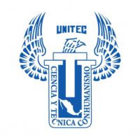

Areas de Interes
DevSecOps
Redes
Full Stack
Formación Academica
Universidad Tecnologica de Mexico - Ing. en Software y Redes
Experiencia Laboral
IZZI
SKY
Noviembre 2021 – Actualmente Actividades: • Control de Cambios basado en el marco de referencia ITILv4 y la gestión de servicios ITSM. Mediante el uso de metodologías tradicionales o agiles y respectiva documentación. • Entrega de controles PCI y SOX. • Sysadmin de aplicativo de CCM y CVS para TI y equipos de desarrollo, integrando el marco de zero trust.
QA Consultoria
Febrero 2021 – Agosto 2021 Actividades: • Elaboración de proyecto web mediante Django (python) con compatibilidad de diversas RDBMS(MySQL, PostgrSQL y SQLite3) en equipo utilizando manejo de repositorios simulación a nivel producción con SCRUM.
Cursos
Google Cybersecurity Certificate – Completado. Certificación SC-900 – Certificado. SCRUM Foundation Profesional Certificate – Certificado. Ruta de Ciberseguridad en platzi. (Curso Ingeniería social, Prevención de ataques informáticos, ciberseguridad y privacidad para empresas.) – Completado. Diplomados Certificación CNNA (Introducción a las redes, Redes empresariales, Seguridad y automatización, Fundamentos de conmutación, Enrutamiento y Redes inalámbricas.) – Completado. Ruta Platzi, Preparación para Certificación CompTIA Security+ - En curso.
Datos
Ubiación: Edo. Mex, Chicoloapan, Real de Costitlan 1.
Numero Cel: 55 8548 2574
Correo: jesus_vega_r@outlook.es
Edad: 27 años
GitHub: ray-vega
Idiomas
Ingles - Nivel Tecnico